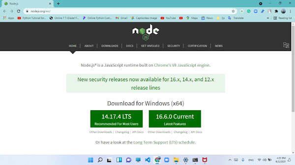
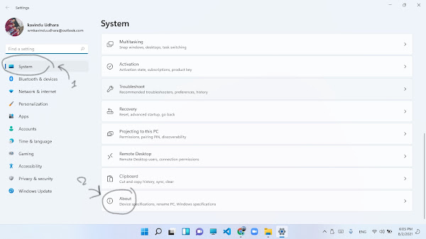
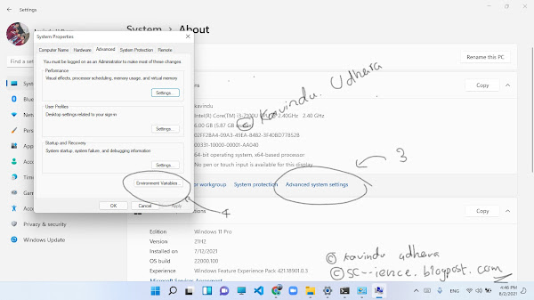
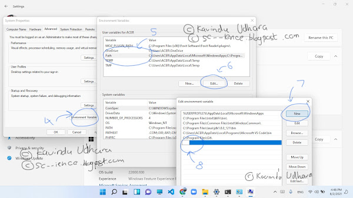

Download node.js
Go to the official Node.js website Nodejs.org and download the latest stable version of Node.js for Windows.
Run the downloaded setup file by double-clicking on it.
Follow the prompts in the setup wizard to complete the installation process.
In windows 10
- Go to the Properties of your computer.
- Click on the "Advanced system settings."
- Now you will be on the System Properties window, click on "Advanced."
- Then, click the "Environment Variables" button.
- Select "Path" from the System Variables.
- Click "Edit."
- Append ";C:\Program Files\nodejs" to the end of the Variable value.
- Finally, click "OK" on all open dialog boxes.
In windows 11
- Go to the settings app.
- In the System tab, click "About" and then click "Advanced system settings". 
- In the System Properties window, click "Environment Variables". 
- From the Environment Variables, select the "Path" variable.
- Click "Edit" and then "New". 
- In the text box, add the path to your node.js installation, by default: "C:\Program Files\nodejs".
- Click OK on all open dialog boxes.
Note: It's recommended to restart your computer after the installation process to make sure that the environment variable updates take effect.